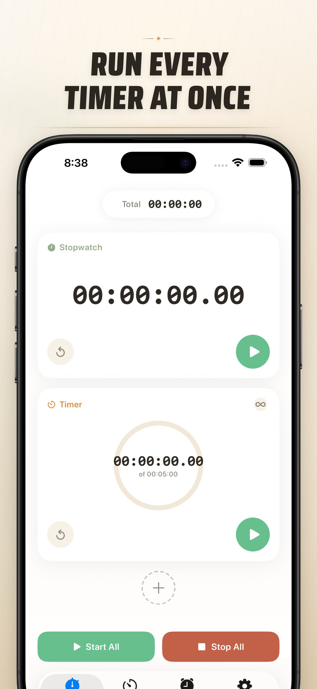
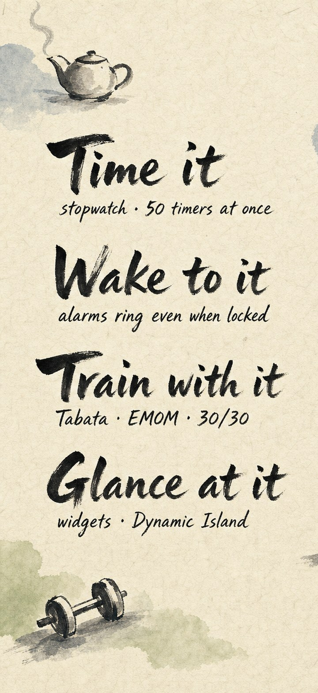
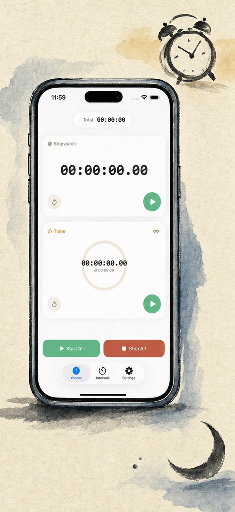
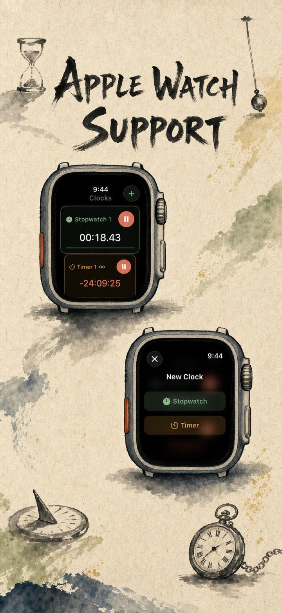
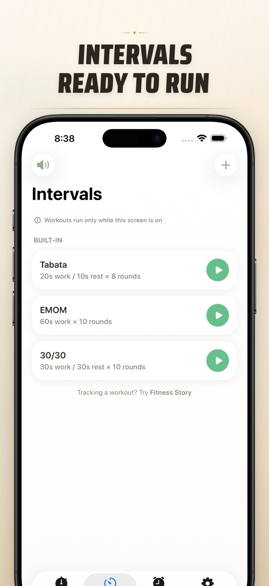
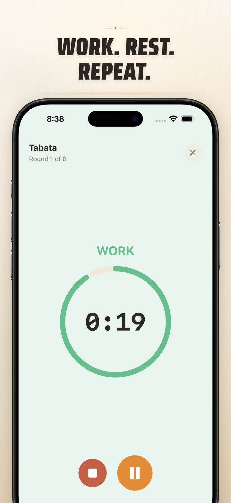
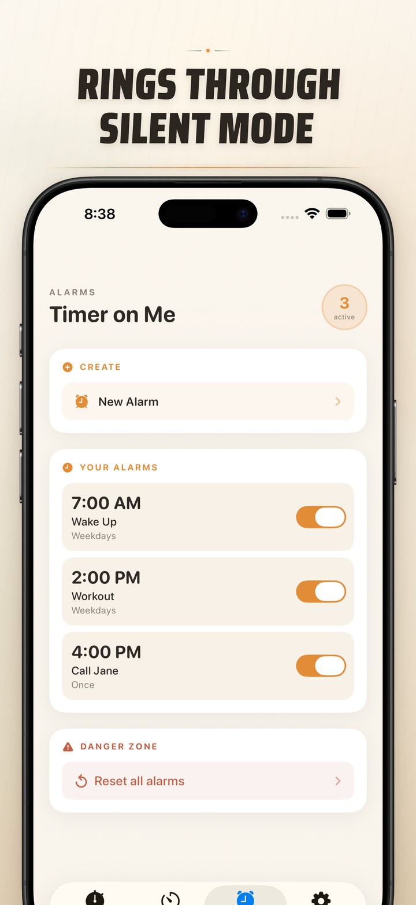

Все таймеры, будильники и секундомеры — одновременно
Запускайте до 50 таймеров и секундомеров одновременно, настраивайте будильники, которые звонят даже при заблокированном iPhone, и точно засекайте время HIIT-тренировок — на iPhone, iPad и Apple Watch.

Мощные функции
Всё, что нужно для полного контроля над временем
Сетка мультитаймера
Запускайте до 50 независимых таймеров и секундомеров одновременно в аккуратной сетке. Запускайте, ставьте на паузу и сбрасывайте каждый по отдельности — или управляйте всеми сразу.
Надёжные будильники
Будильники для пробуждения и напоминаний с пользовательскими метками и расписанием по дням недели на основе AlarmKit, поэтому они звонят даже при заблокированном iPhone или когда приложение Мой Таймер закрыто. Включены варианты повтора и ваши собственные звуки.
Интервальные тренировки
Встроенные пресеты Tabata, EMOM и 30/30 позволяют начать тренировку в два касания, а ещё есть редактор пользовательских интервалов и полноэкранный режим тренировки с цветовыми подсказками.
Приложение для Apple Watch
Полноценное нативное приложение для Apple Watch — запускайте несколько секундомеров и таймеров прямо на запястье с точностью до сотых секунды и расширениями, даже когда iPhone нет рядом.
Виджеты и Live Activities
Управляйте таймерами прямо с домашнего экрана с помощью интерактивных виджетов и следите за обратным отсчётом на экране блокировки и в Dynamic Island благодаря Live Activities.
Звуки будильника на ваш вкус
Выбирайте из десятка встроенных звуков будильника или импортируйте свои. Ваши оповещения звучат даже при заблокированном iPhone, в беззвучном режиме или когда приложение закрыто.
Управление сеансами
Сохраняйте настройки таймеров и загружайте их в любое время. Экспортируйте сеансы в JSON, CSV или текст для удобного обмена и резервного копирования.
Умный дисплей
Точность до сотых секунды, процентный прогресс и режим постоянного отображения экрана. Настраивайте внешний вид и поведение таймеров.
Посмотрите в действии
Чистый дизайн и мощная функциональность






Начните отсчёт прямо сейчас
Скачивайте бесплатно. Несколько таймеров, интервальные тренировки и виджеты — всё готово к использованию. Аккаунт не требуется.
Часто задаваемые вопросы
Всё, что нужно знать о приложении Мой Таймер
Да. Будильники работают на основе AlarmKit от Apple и звонят даже при заблокированном iPhone или когда приложение Мой Таймер закрыто, а оповещения таймеров надёжно срабатывают и в фоновом режиме.
До 50 независимых таймеров и секундомеров в одном сеансе — запускайте, останавливайте и сбрасывайте их по отдельности или синхронизированными группами.
Да — полноценное нативное приложение для watchOS с несколькими одновременными таймерами и секундомерами, точностью до сотых секунды и расширениями. Оно работает даже когда iPhone вне зоны досягаемости.
Безусловно. Встроенные пресеты Tabata, EMOM и 30/30 позволяют начать в два касания, а ещё есть редактор пользовательских интервалов для ваших собственных последовательностей работы/отдыха/раундов и полноэкранный режим тренировки.
Да — выбирайте из встроенных мелодий или импортируйте собственные аудиофайлы.
Учётная запись и интернет не требуются. Всё работает на устройстве, а ваши данные остаются локальными.
Да, приложение Мой Таймер можно скачать бесплатно. Дополнительная встроенная покупка открывает доступ к будильникам сверх первых двух, если они вам понадобятся.
Ваша конфиденциальность важна
Мой Таймер хранит все ваши данные локально на вашем устройстве. Никаких аккаунтов, никакого отслеживания, никакого сбора данных. Ваши сеансы таймеров принадлежат только вам.
Читать нашу политику конфиденциальности